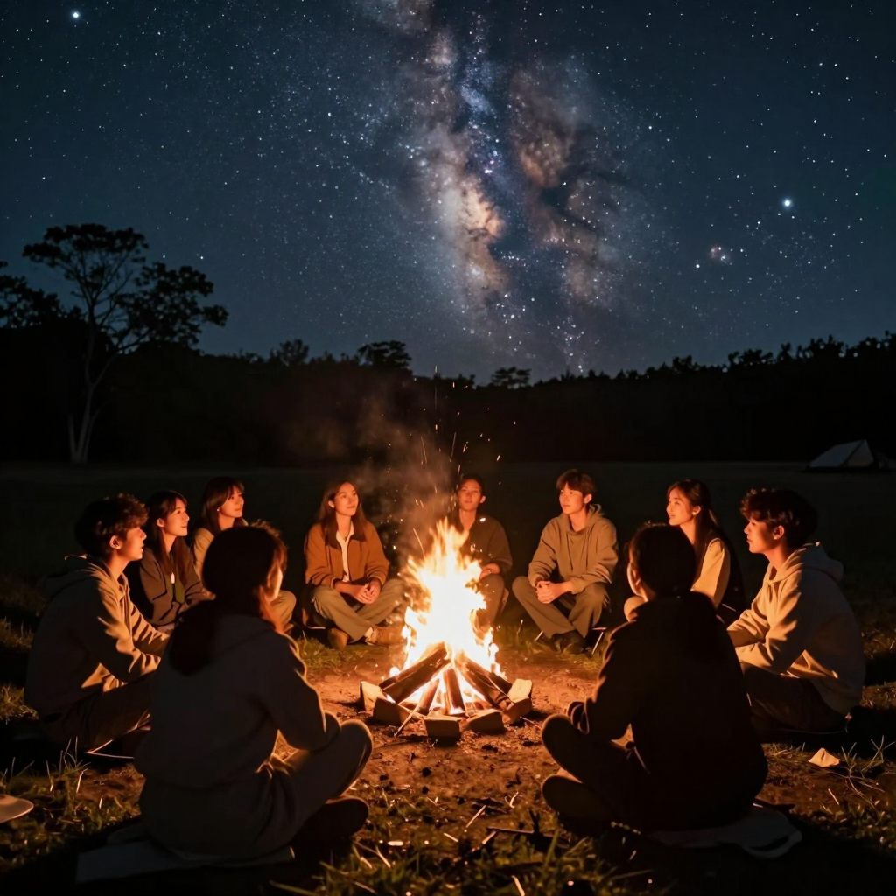
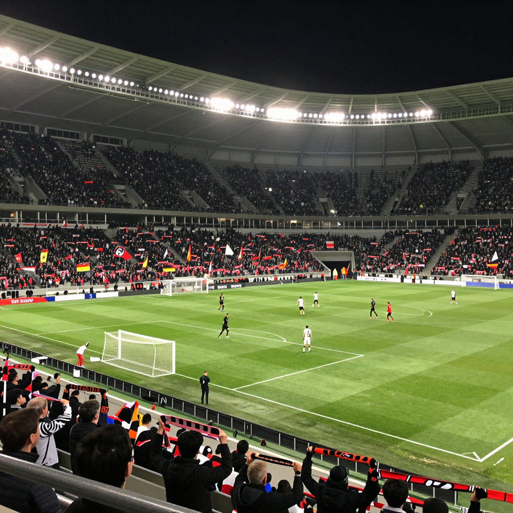
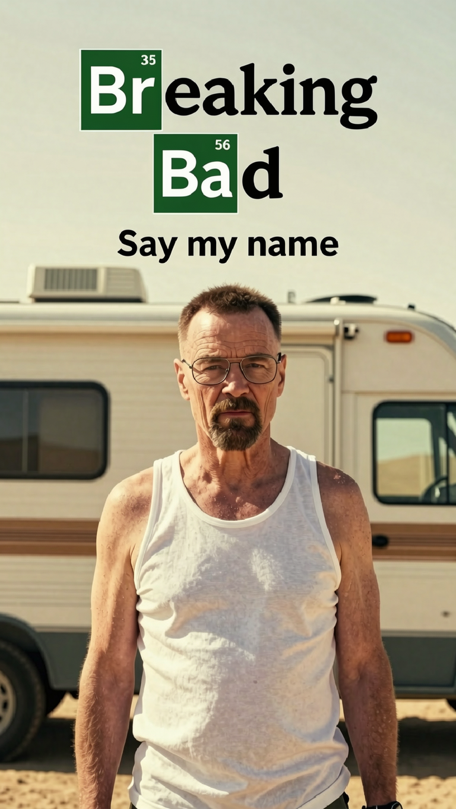

Generate an image of a beach at sunset with waves gently crashing on the shore.
Text-to-Image Generation
Generate an image of people sitting around a campfire under a starry night sky.

Generate an image of a soccer stadium filled with cheering fans during a match.

Generate an image of a pagoda in a quite forest. The pagoda should be placed in the left half of the image, with trees filling other areas.
First generate an image of a pagoda in a quiet forest. The pagoda should be placed in the left half of the image, with trees filling other areas. Then convert the image into a painting with oil style.
First generate an image of a ship floating in the sea. Then replace the background with a sunset sky.
Generate a poster for a series named "Breaking Bad". The result should be a vertical image of the main character, Walter White, wearing a white vest with a serious expression, standing in front of a motorhome in the desert. The title "Breaking Bad" should be displayed in the top center of the image, followed by the tagline "Say my name".

Generate an image of a comic strip with four panels. The first panel should show a man waking up in bed, the second panel should show him looking at his smartphone, the third panel should show the smartphone displaying that it is Sunday, and the fourth panel should show the man continue to lie in bed.

Design a book cover for a novel titled "A Song of Ice and Fire". The cover should feature a dragon breathing fire, a snowy landscape, and a sword. The title of the book together with the author's name "George R. R. Martin" should be displayed prominently on the cover.
Generate an image of a handwritten letter on a piece of paper. The letter should be addressed to "My Darling" and signed with the name "Juliet". The content of the letter should express love and longing.